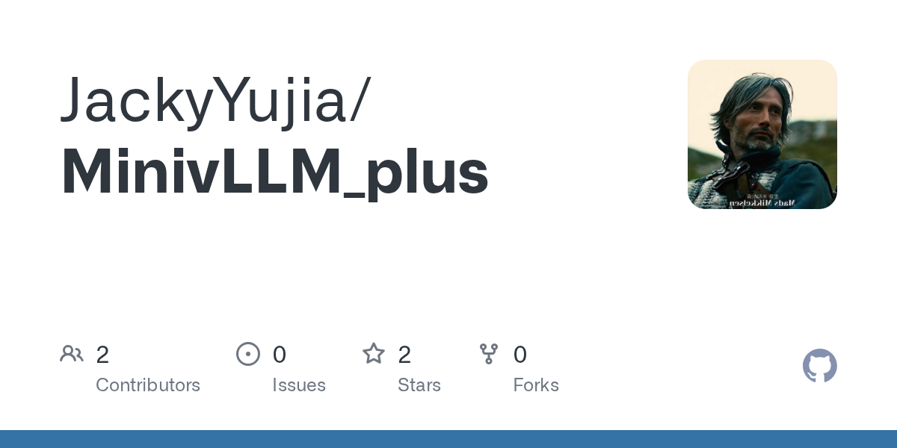
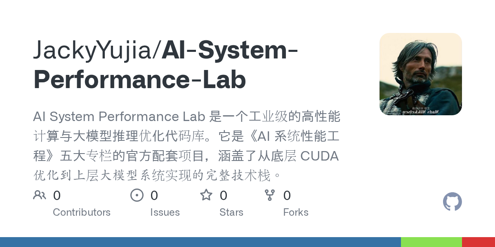
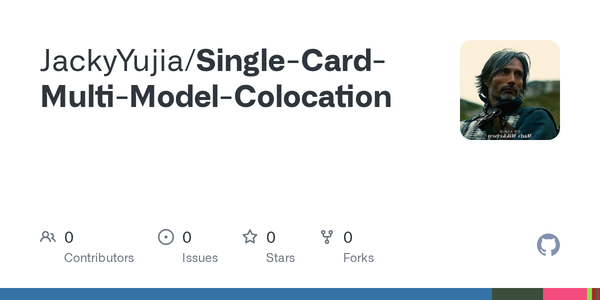
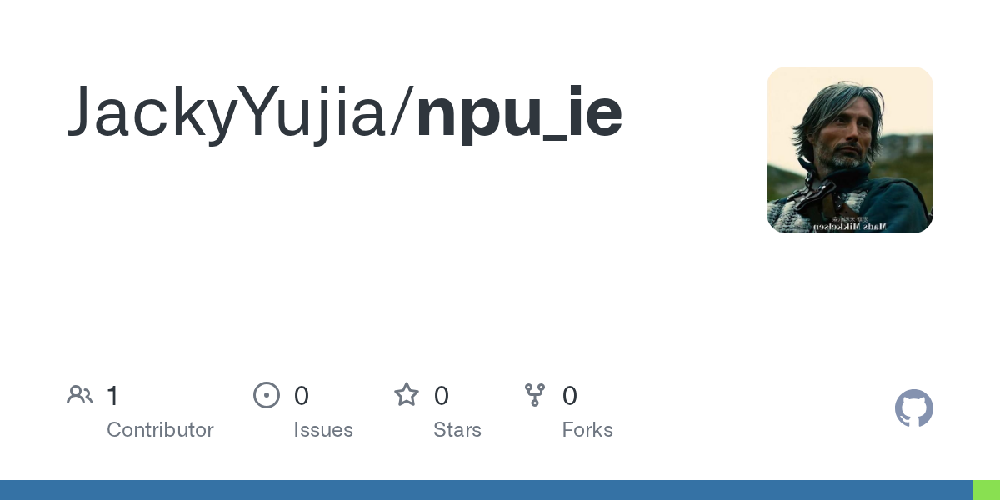

Current focus
推理系统与
KV Cache
vLLM、SGLang、TensorRT-LLM、Continuous Batching、PagedAttention、Prefix Cache 与 PD 分离。
Jacky Yujia · 曹雨佳
专注于大模型推理系统、算力基础设施与后端工程。从 API 与调度器，到 KV Cache、GPU Kernel 和多设备迁移。


Backend → AI Systems → GPU / NPU Infrastructure
把 GitHub 主页中的关注方向压缩成一张可扫描、可比较的系统地图。
Current focus
vLLM、SGLang、TensorRT-LLM、Continuous Batching、PagedAttention、Prefix Cache 与 PD 分离。
Profile
Transfer
Mooncake、LMCache、NIXL、P2P / NCCL、RDMA / RoCE 与 D2D。

Performance
CUDA Graph、CUTLASS、GEMM、FlashMLA、NCCL-tests 与 Ascend。
Platform
Go、Kubernetes、Docker、MySQL、Prometheus、Grafana 与资源管理。
鼠标悬停或点击展开专题。移动端自动转换为纵向折叠列表。
工程边界、任务职责与实际系统上下文。
Discuss systems2026.05 — 至今
参与 AICP 算力平台建设，关注算力交付、集群准入、资源管理与 GPU Benchmark 工程。
2025.03 — 2026.01
参与 FlexNPU 大模型推理热迁移与传输链路研发，关注 KV Cache、D2D、多卡恢复和高可用推理。
2024.09 — 2027.06
研究方向包括分域 AI 加速器、多租户推理、性能建模与资源形态感知。
每个项目都保留真实仓库预览、定位和是否 Fork 的边界。
Scheduler、BlockManager、PagedAttention、Prefix Cache、Decode Kernel 与 Qwen3-32B 部署。
GPU、AI Systems、推理服务和性能工程的实验与资料沉淀。
单卡多模型共置、资源分配与推理调度实验。

NPU 设备侧推理、模型执行和异构算力工程实践。
用于快速定位项目，不用在长列表中寻找。
三条反复出现在工作与学习中的判断。
性能问题通常不属于某一个组件，而属于请求、状态、数据与资源共同形成的路径。
System boundary
一次实验只有同时保留代码、基准、观察和结论，才会成为可以复用的工程证据。
Reproducibility
缓存从临时状态变成跨实例资源之后，生命周期和失败恢复就必须成为一等设计对象。
KV lifecycle
AI Infra · Backend · Cloud Native